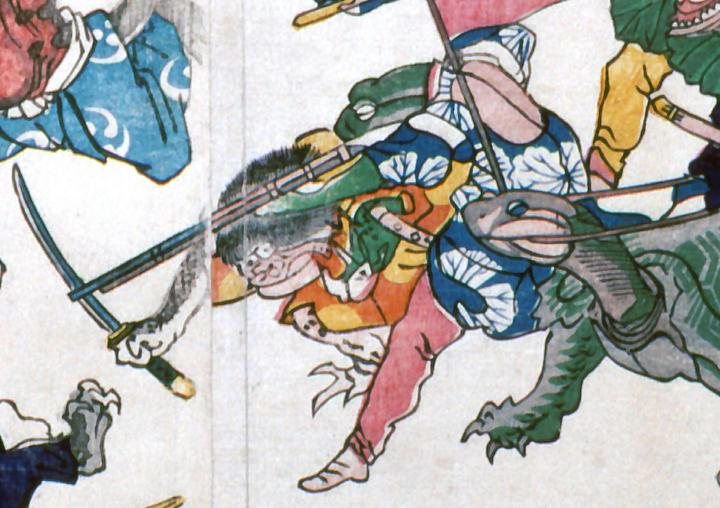

← 图鉴索引

銃を構え狙いを定める蛙。蓮模様の上衣と赤の細袴をはいている。その後ろに、刀を持ち倒れこむ河童がいる。
出典：親書誌：A5_pushkin_0041：新宮魚勝戦；シングウウオガッセン／日付：2011／資源識別子：A5_pushkin_0041_0009_0000
Copyright (c)2010- International Research Center for Japanese Studies, Kyoto, Japan. All rights reserved.